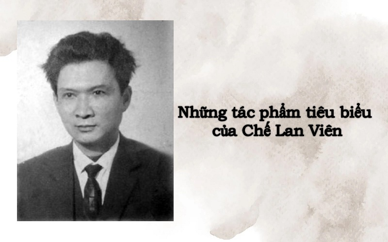
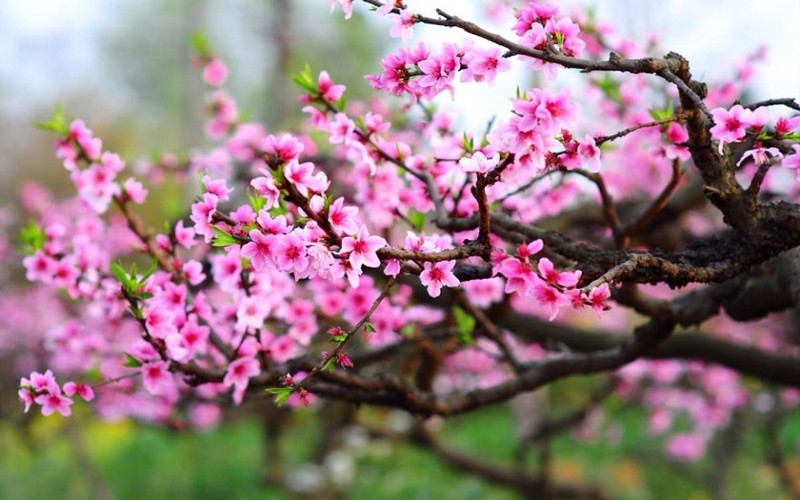

Tổng hợp các tác phẩm Chế Lan Viên hay tiểu biểu
Tác phẩm Chế Lan Viên đa dạng chủ đề và thể loại, từ thơ ca, văn xuôi đến phê bình văn học. Mỗi giai đoạn lịch sử, tác giả lại có phong cách sáng tác riêng, phù hợp với hoàn cảnh và nhận thức lúc bấy giờ.
Trọn bộ các tác phẩm của Chế Lan Viên
Chế Lan Viên (1920 – 1989) là nhà thơ tiêu biểu trong phong trào Thơ Mới và là một trong các tác giả vĩ đại của văn học Việt Nam thế kỷ 20. Cuộc đời, sự nghiệp của ông gắn liền với nhiều sự kiện lịch sử quan trọng của đất nước.
Những bài thơ của Chế Lan Viên thường thể hiện triết lý sâu sắc về con người, cuộc sống và vũ trụ. Dù sử dụng hình ảnh thơ đơn giản, gần gũi nhưng thơ ông có nhiều lớp nghĩa phong phú, sâu xa.
Các tác phẩm của Chế Lan Viên
Thơ
- Tuyển tập thơ Chế Lan Viên (tập I, 1985; tập II, 1990)
- Những bài thơ đánh giặc
- Ngày vĩ đại
- Dải đất vùng trời
- Hoa trên đá
Truyện và Bút ký
- Vàng sao
- Thăm Trung Quốc (bút ký)
- Những ngày nổi giận (bút ký)
- Bác về quê ta (tạp văn)
- Nàng tiên cá trên mặt đất
Tiểu luận
- Kinh nghiệm tổ chức sáng tác
- Nói chuyện thơ văn
- Vào nghề
Phê bình văn học
- Suy nghĩ và bình luận
- Bay theo đường bay dân tộc đang bay
- Nghĩ cạnh dòng thơ
- Từ gác Khuê Văn đến quán Trung Tân
- Ngoại vi thơ
- Nàng và tôi
Tuyển tập thơ Chế Lan Viên hay nhất
Ta
Sao ở đâu mọc lên trong đáy giếng
Lạnh như hồn u tối vạn yêu ma?
Hồn của ai trú ẩn ở đầu ta?
Ý của ai trào lên trong đáy óc
Để bay đi theo tiếng cười, điệu khóc?
Biết làm sao giữ mãi được Ta đây
Thịt cứ chiều theo thú dục chua cay!
Máu cứ nhảy theo nhịp cuồng kẻ khác!
Mắt theo dõi Tinh hoa bao màu sắc!
Đau đớn thay cho đến cả linh hồn
Cứ bay tìm Chán Nản với U Buồn
Để đỉnh sọ trơ vơ tràn ý thịt!
Mà phải đâu đã đến ngày tiêu diệt!
Ai bảo giùm: Ta có có Ta không?
Lời bình
Bài thơ Ta thể hiện sự chiêm nghiệm sâu sắc về bản thân và cuộc đời. Chế Lan Viên khắc họa sự tìm kiếm bản sắc và ý nghĩa tồn tại của chính mình trong thế giới rộng lớn. Bài thơ sử dụng ngôn từ tinh tế và hình ảnh mạnh mẽ để khám phá những khía cạnh nội tâm và cảm xúc của tác giả, thể hiện sự tự vấn và khám phá bản thể.
Xuân
|
Tôi có chờ đâu, có đợi đâu |
 |
Lời bình
Xuân của Chế Lan Viên không chỉ là một bài thơ về mùa xuân mà còn là một sự miêu tả về sự tươi mới, sự sống và hy vọng. Bài thơ gợi lên vẻ đẹp và sức sống của mùa xuân, đồng thời phản ánh những tâm tư và suy nghĩ của tác giả về sự thay đổi và sự khởi đầu mới.
Ngôn từ của Chế Lan Viên rất giàu hình ảnh và cảm xúc, tạo ra một không gian thơ mộng và tràn đầy sức sống.
Các tác phẩm tiêu biểu của Chế Lan Viên khác
Bác về quê ta ghi lại chuyến thăm của Chủ tịch Hồ Chí Minh về quê hương của tác giả. Tác phẩm này không chỉ phản ánh chuyến thăm mà còn mang lại cái nhìn sâu sắc về mối quan hệ giữa Hồ Chí Minh và nhân dân, cũng như sự ảnh hưởng của Người đối với quê hương và đất nước.
Nội dung chính của tác phẩm bao gồm:
- Mô tả chuyến thăm của Hồ Chí Minh: Tác phẩm miêu tả chi tiết chuyến thăm của Hồ Chí Minh đến quê hương của Chế Lan Viên, bao gồm các hoạt động, cuộc gặp gỡ và các cuộc trò chuyện của Người với nhân dân địa phương.
- Tưởng nhớ và tôn vinh: Chế Lan Viên thể hiện lòng kính trọng và sự ngưỡng mộ đối với Chủ tịch Hồ Chí Minh, nhấn mạnh tầm quan trọng của Người đối với sự nghiệp cách mạng và sự phát triển của đất nước.
- Phản ánh về tình cảm của người dân: Tác phẩm cũng phản ánh sự vui mừng và tự hào của người dân khi Hồ Chí Minh trở về quê hương, cho thấy tình cảm sâu sắc và lòng yêu mến của nhân dân đối với Người.